SQ-DM：基于激进量化与时序稀疏性的 Diffusion Model 加速
扩散模型生成一张图像需执行数十至数百个 time step 的模型推理，计算与访存开销巨大；且现有 4-bit 量化格式（INT4、INT4-VSQ 等）因量化误差跨 time step 累积而导致明显画质退化，激活又高度稠密，稀疏加速器难以奏效。论文提出软硬件协同设计：对量化敏感的首尾少数 block 保留 MXINT8，其余 block 采用带 FP8 scale factor 的 INT4 混合精度量化；将 SiLU 替换为 ReLU（finetune 开销小于预训练时间的 10%）以支持 UINT4 并诱导平均 65% 的激活稀疏；进而刻画随 time step 演化的 per-channel 时序稀疏模式，构建基于 MAGNet、融合 MAERI-like 稠密数据通路与 SIGMA-like 稀疏数据通路的异构加速器，配合 channel-last 地址映射与 time-step-aware 稀疏检测器（阈值 30%）。在 Stonne（28nm）仿真中，4-bit 量化贡献 3.78× 加速，时序稀疏再叠加 1.83×，合计相对 FP16 SiLU 基线 6.91× 加速与 51.5% 能耗降低，且 4-bit 画质优于已有 4-bit 方案。
扩散模型生成高质量内容需要跨大量 time step 反复评估大型神经网络，速度慢、计算与存储开销大；直接套用现有 4-bit 量化会因误差累积与激活分布随层/time step 变化而严重掉画质，且激活数据极其稠密，现有稀疏 DNN 加速器无法有效加速。
三项协同优化：(1) 混合精度量化——基于 block 级量化敏感性分析，仅对敏感的首尾少数 block 保留 MXINT8（约占 5% 开销），其余用自研带 FP8 scale factor 的 INT4 格式；(2) 硬件友好激活函数——将 Conv+SiLU 替换为 Conv+ReLU 并 finetune，使激活可用 UINT4 全部量化级，同时诱导平均 65%（部分层达 85%）的激活稀疏；(3) 时序 per-channel 稀疏加速——发现各通道稀疏性随 time step 演化的模式，设计含 DPE/SPE 的异构稠密-稀疏 PE 阵列（MAERI-like 稠密、SIGMA-like 稀疏数据通路）、channel-last 数据地址映射、PPU 中的时序稀疏检测器（30% 阈值）与逐 time step 的稀疏索引更新调度。
混合精度量化（MP-only）相对基线数据格式平均降低 73% 计算开销与 72% 存储开销
ReLU 化模型平均激活稀疏度约 65%、部分层高达 85%，带来约 52% 的计算量削减
仅利用时序稀疏性即相对纯稠密基线取得平均 1.83× 加速与 51.5% 系统能耗节省
4-bit 量化贡献 3.78× 加速，时序 per-channel 稀疏再叠加 1.83×，总计相对 FP16 SiLU 扩散模型 6.91× 加速
所提 4-bit 量化方案（MP+ReLU）在 CIFAR-10、AFHQv2、FFHQ、ImageNet 上取得所比较格式中最优的 FID 分数
评估基于开源模拟框架 Stonne、28nm 工艺，DPE 与 SPE 各含 128 个乘法器
与 PTQ4DM、Q-diffusion 等 8-bit 工作以及需要 FP16 低秩分支和 kernel fusion 的 SVDquant 不同，本文直接将权重与激活量化到 4-bit，不依赖 smoothing 或任何高精度浮点分量；不同于利用 2:4 结构化权重稀疏的已有工作，本文聚焦激活稀疏并主动诱导模型中原本不存在的稀疏性；首次刻画并利用扩散模型中随 time step 演化的 per-channel 时序稀疏模式，据此设计稠密/稀疏异构 PE 与 time-step-aware 稀疏检测硬件。
相关度级别：low
命中能力域：无明显对应
理由：论文属于 AI/ML 加速器的算法-硬件协同设计（量化、稀疏、计算微架构），评估完全基于 Stonne 架构级仿真，未涉及 RTL 实现、验证方法学、时序/物理实现，也未涉及 DDR/LPDDR/HBM/UCIe 等存储或互连接口的任何内容，与团队 7 个能力域（内存/互连 IP 架构、RTL 设计、时序物理、验证方法学、形式验证、仿真加速、EDA 自动化）均无实质交集。仅有边际参考价值：了解未来 AI SoC 的计算负载特征（channel-last 数据布局、稀疏感知地址生成）或有助于把握存储 IP 需求趋势，但论文本身未做任何存储接口层面的分析。
建议动作：仅了解结论
arXiv:2501.15448v1 [cs.CV] 2025年1月26日
SQ-DM：通过激进量化与时序稀疏性加速扩散模型
Zichen Fan *‡ , Steve Dai †# , Rangharajan Venkatesan † , Dennis Sylvester * , Brucek Khailany †
* 密歇根大学安娜堡分校，密歇根州安娜堡 † NVIDIA，加利福尼亚州圣克拉拉
‡ zcfan@umich.edu, # sdai@nvidia.com
摘要 - 扩散模型已在图像生成任务中广受欢迎。然而，生成高质量内容仍然明显缓慢，因为它需要在众多时间步上运行模型推理。为了加速这类模型，我们提出对权重和激活进行激进量化，同时促进显著的激活稀疏性。我们进一步观察到，上述稀疏模式在不同通道之间各不相同，并随时间步不断演变。为支持这种量化与稀疏方案，我们提出了一种新颖的扩散模型加速器，其特色包括异构混合精度稠密-稀疏架构、通道在后（channel-last）地址映射，以及用于高效处理该稀疏模式的时间步感知稀疏检测器。我们的4比特量化技术相比现有4比特方法展现出更优的生成质量。与传统稠密加速器相比，我们的定制加速器实现了6.91×的加速和51.5%的能耗降低。
扩散模型通过从随机噪声出发对数据进行逐步去噪来生成逼真的内容。它们已成为生成式人工智能（GenAI）的基石，被应用于图像生成 [1]、视频生成 [2] 乃至天气预测 [3] 等任务。然而，生成高质量内容的过程非常缓慢，因为它需要在许多时间步上反复评估一个庞大而复杂的神经网络模型。其复杂度随图像分辨率的提高和模型先进程度的提升而增加，导致巨大的计算与内存开销。因此，加速扩散模型对于实现真实世界应用的高效部署至关重要。
量化与稀疏性是过去十年间推动深度神经网络（DNN）性能大幅提升的两大关键技术。量化使 DNN 的权重与激活值的精度得以降低，通常从 32 比特浮点数降至 4 比特整数等低位宽格式。稀疏性是指剪除较不重要的权重与激活值的做法，例如将张量中每四个相邻值里最小的两个值置零。无论单独使用还是结合使用，量化与稀疏性都能显著提升 DNN 执行的计算与内存效率，带来更小的模型尺寸、更快的计算速度和更低的功耗。
尽管量化与稀疏性仍是加速扩散模型时的首要考虑因素，但由于扩散模型自身的独特特性，这些技术无法直接开箱即用。首先，量化误差会随时间步不断累积。模型单次评估（单个时间步）中即使很小的误差，也会在生成单个样本（一张图像）所需的多次模型评估中不断叠加放大。其次，扩散模型中的激活值分布在不同层与不同时间步之间各不相同。这使得难以在整个生成过程中应用统一的量化方案。第三，扩散模型内部的数据值往往极其稠密。所观察到的稠密程度使得稀疏 DNN 加速器无法被有效用于更高效地执行这些模型。
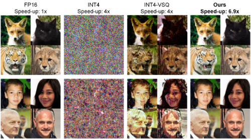
事实上，我们观察到将现有 4 比特数据格式应用于扩散模型时会出现严重的质量下降。如图 1 所示，INT4 和 INT4-VSQ 等现有 4 比特格式会导致明显且不可接受的图像质量下降。在本文中，我们提出新颖的软硬件协同设计技术来加速扩散模型，在显著降低硬件成本的同时实现最先进的生成质量。我们的贡献如下：
本文其余部分的结构安排如下：第二节介绍扩散模型的基础知识，并讨论针对这些模型进行量化与稀疏化的相关工作。第三节提出我们为提升扩散模型效率所做的优化。第四节详细介绍为支持这些优化而实现的加速器。第五节总结我们的研究发现以及可能的未来方向。
在本工作中，我们采用阐释扩散模型（Elucidated Diffusion Models, EDM）[4] 与 EDM2 [5] 作为我们的基线扩散模型。就训练与采样技术而言，EDM 是当今可用的最强基线，因为它是在广泛探索此类模型的训练与采样设计空间的基础上构建而成的。更重要的是，它凭借生成速度与生成质量被视为最先进的模型，因此在保持良好质量的同时对其进行加速极具挑战性。EDM 是文本到图像生成 [1] 和天气预测 [3] 等应用的骨干模型，并可推广至基于卷积的扩散模型家族。
图 2 展示了 EDM 的执行过程与模型架构。与大多数基于卷积的扩散模型一样，EDM 采用基于 U-Net 的架构，其中编码器用于捕获含噪输入的特征，解码器用于重建去噪后的输出。如图 2 所示，EDM 的架构主要由四种类型的层组成：Skip、Conv+SiLU、Embedding 和 Attention。Skip 模块管理从编码器到解码器的跳跃连接，实现信息从编码器到解码器以及从较早层到较深层的传播。Embedding 线性层传递嵌入信息，包括噪声调度与标签（用于条件生成场景）。Attention 模块存在于特定层中（例如用于 CIFAR-10 的 EDM1 模型中的 enc.16x16_block_1），实现图像自注意力机制以捕获全局上下文。通常，需要执行数十至数百个时间步（又称编码器-解码器模型评估）才能从随机噪声生成一幅图像，因为每个时间步都会在前一时间步的基础上返回一幅略微去噪的图像。
深度神经网络（DNN）量化将模型权重和激活值从高精度浮点格式转换为低精度数据格式。具体而言，张量 X 的均匀对称量化可表示为 ˆ X = round( X /s x )，其中 s x = max( | X | ) /q max。这里 X 是原始张量，ˆ X 是量化后的张量，s x 是 X 的量化缩放因子。q max 表示最大的量化值。max 算子可以在 X 的不同粒度上取值，例如在整个张量上、在每个通道上，或对每个向量取值 [6]。采用缩放量化后，数据将以量化格式进行存储和计算。计算结果需要使用缩放因子 { s x } 重新缩放回模型原始的动态范围。
已有多种技术被提出用于量化扩散模型。PTQ4DM [7] 和 Q-diffusion [8] 成功地将扩散模型量化到 8 比特。若干后续工作 [9]-[12] 进一步提升了它们的生成质量。最近，SVDquant 利用激活平滑和低秩分解在扩散模型上实现了 4 比特量化 [13]。然而，该方法需要高精度（FP16）的低秩分支以及特殊的核融合技巧来缓解这些分支带来的开销。相比之下，我们直接将原始权重和激活值量化到 4 比特，质量退化极小，且无需平滑处理或使用任何高精度浮点组件。我们的量化技术还同时促进稀疏性，从而实现进一步加速。
| Model, Dataset | EDM1, CIFAR-10 | EDM1, AFHQv2 | EDM1, FFHQ | EDM2, ImageNet |
|---|---|---|---|---|
| FP32 | 1.85 | 2.08 | 2.46 | 4.47 |
| FP16 | 1.85 | 2.08 | 2.48 | 4.47 |
| INT8 | 12.6 | 14.46 | 20.34 | 8.78 |
| MXINT8 [22] | 1.93 | 2.08 | 2.63 | 4.48 |
| INT4 | 136.5 | 289.3 | 244.8 | 346.2 |
| INT4-VSQ [6] | 15.3 | 18.35 | 30.52 | 20.27 |
| Model, Dataset | EDM1, CIFAR-10 | EDM1, AFHQv2 | EDM1, FFHQ | EDM2, ImageNet |
深度神经网络（DNN）中的稀疏性是指存在零值的权重或激活值，可以利用这一特性来降低计算复杂度和内存占用。除了量化之外，我们还可以对较不重要的权重和激活值进行剪枝，从而构建一个所需资源更少的稀疏模型。事实上，当前一代 Tensor Core 已提供对结构化权重稀疏性的支持，其利用 2:4（50%）的稀疏模式，可实现两倍于稠密矩阵乘法的数学吞吐量 [14]。
诸如 [15] 和 [16] 等先前的工作已经证明，在扩散模型中实现结构化权重稀疏性能够达到所承诺的近 50% 的计算量削减。这些工作利用稀疏感知微调，并报告了模型质量的轻微退化。与这些工作正交，我们关注的是激活值而非权重，并促进原始模型中并不天然存在的稀疏性。我们能够诱导出平均 65% 的激活稀疏度，从而带来约 52% 的计算成本降低。激活稀疏性还可以与权重稀疏性相结合，以获得额外的效率提升。
为了解扩散模型量化的整体格局，我们在多个数据集（CIFAR-10 [17]、AFHQv2 [18]、FFHQ [19] 和 ImageNet [20]）上评估了针对 EDM 的现有量化技术。遵循 EDM 及先前工作的做法，我们使用 Fréchet Inception 距离（FID）[21] 来衡量生成图像的质量：FID 越低表示图像质量越好。在实验中，我们在 CIFAR-10、AFHQv2 和 FFHQ 上各生成 50,000 张图像，在 ImageNet 上生成 10,000 张图像来计算 FID 分数。表 I 展示了模型在全精度（FP32）、半精度（FP16）以及最具竞争力且被普遍接受的 8 位和 4 位格式的各种变体下的结果。此处我们在整个模型中对权重和激活值统一使用相同的格式。
从表 I 可以明显看出，采用细粒度逐块缩放因子的 MXINT8 和 INT4-VSQ，相比采用粗粒度逐通道缩放因子的 INT8 和 INT4 对应方案，能够带来显著更高的图像质量。值得注意的是，MXINT8 配置在所有数据集上的图像质量退化均可忽略不计。然而，即使采用细粒度缩放，INT4-VSQ 设置仍然遭受了严重的图像质量损失。我们的探索一方面说明了细粒度缩放的必要性，另一方面也表明，要在低精度下达到与基线相当的质量，需要对模型和数据格式进行新的优化。在后续章节中，我们假设数据格式一律采用细粒度缩放。
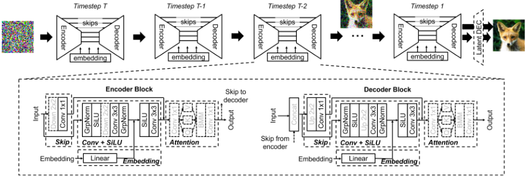
根据图3中我们按块进行的量化敏感度实验，这些扩散模型中不同层或不同计算类型对量化的敏感度尤为显著。在该实验中，我们将其中一个块保持为4位精度，而所有其他块均设置为8位。8位的块我们直接采用 MXINT8，而对于4位的块，我们特别提出了自己的带 FP8 缩放因子的 INT4 格式，以提升表示的动态范围。图3的结果表明，通常只有最前面和最后面的少数几个块对量化更为敏感。因此，只需将这些对量化敏感的块保持在较高精度（MXINT8），而对其余块使用4位即可。高精度块的计算与存储开销仅占总开销的约5%，使系统能够保留4位精度带来的显著收益。
此外，图4给出了模型中四类块的计算与存储开销分解。值得注意的是，总计算开销的90%以上和总存储开销的85%都归因于 Conv+SiLU 块，凸显了其在模型整体性能中的重要性。因此，我们着重将 Conv+SiLU 计算块量化为4位，而其他较不重要的块采用8位。这些优化的结果呈现在表II的 Ours(MP-only) 行中，相比基线数据格式取得了明显的改进，同时计算开销和存储开销分别平均降低了73%和72%。此处我们基于计算资源和存储带宽，假设1次 FP16 乘法在计算上等价于2次 INT8 乘法或4次 INT4 乘法 [23]。
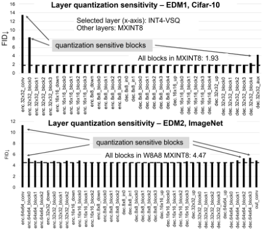
尽管我们的混合精度量化技术显著改善了 FID 分数，我们发现在这些模型中普遍存在的非线性激活函数（SiLU）方面还存在额外的优化机会。图5（左）展示了一个 Conv + SiLU 层的激活数据分布，其中 SiLU(x) = x/(1 + e^-x) [24]。在 SiLU 非线性函数的输出端，数据分布范围为 [-0.278, ∞)。由于存在一个较小的负数区间，激活值必须采用有符号数据格式（例如有符号 INT4）。图6（上）展示了使用 SiLU 时所需的有符号 INT4 量化级。当输入 x 处于 [-1, 1] 范围时，SiLU(x) 的输出位于 [-0.269, 0.731] 之内。根据第 II-A 节中的量化公式，有符号 INT4 的 16 个量化级中仅有 10 个能够被使用，导致可用位宽被严重利用不足。
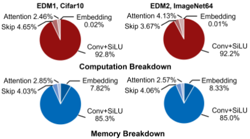
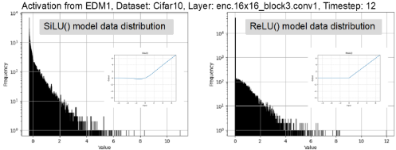
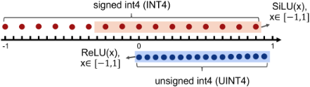
相比之下，ReLU 是一种被广泛采用且硬件高效的非线性函数，其输出数据分布范围为 [0, ∞) [25]。用 ReLU 替代 SiLU 后，我们可以将表示范围仅聚焦于正数区间，并将激活值量化为无符号 INT4（UINT4）数据格式，以实现更精确的表示。图6（下）描绘了当 x 处于 [-1, 1] 范围内时 ReLU 激活值的量化情况。UINT4 格式的所有可用量化级都可以被使用。因此，与使用 Conv+SiLU 相比，采用 Conv+ReLU 使模型对量化更加友好。
为了使基于 SiLU 的模型改用 ReLU，我们替换非线性激活函数，然后对预训练的基于 SiLU 的模型进行微调。微调过程所需时间不到总预训练时间的 10% [4]。所得的基于 ReLU 的模型实现了与原始基于 SiLU 的模型相近的图像质量。图1展示了由基于 SiLU 的模型（采用现有量化技术，左侧三张图像）和基于 ReLU 的模型（采用我们的技术，第四张图像）生成的示例图像（针对 AFHQv2 和 FFHQ 数据集），以及它们各自的性能。可以看出，4 位量化的基于 ReLU 的模型在质量上明显优于其他 4 位量化模型。
为了得到基于 ReLU 的模型，我们对全精度版本的模型进行微调，随后进行训练后量化（PTQ），而不是直接执行量化感知训练（QAT）。这种方法避免了 QAT 的开销，并产生单一的经 ReLU 训练的模型，该模型可适配不同的量化设置和硬件目标。不过，我们确实期望在基于 ReLU 的模型上进行 QAT 以获得进一步的质量提升。采用我们提出的 4 位量化方案的基于 ReLU 的模型的 FID 分数报告于表 II 的 Ours(MP+ReLU) 行中。事实上，通过用 Conv+ReLU 块替换 Conv+SiLU 块，我们的 4 位扩散模型取得了最佳的 FID 分数。
| Quant Method | Avg. Comp. Sav- ing | Avg. Mem. Sav- ing | EDM1, CIFAR- 10 | EDM1, AFHQ v2 | EDM1, FFHQ | EDM2, Ima- geNet |
|---|---|---|---|---|---|---|
| INT4-VSQ | 75% | 75% | 15.6 | 18.35 | 30.52 | 20.27 |
| Ours (MP-only) | 73% | 72% | 2.87 | 2.39 | 5.41 | 8.75 |
| Ours (MP+ReLU) | 73% | 72% | 2.12 | 2.35 | 3.1 | 6.93 |
| Quant Method | Avg. Comp. Sav- ing | Avg. Mem. Sav- ing | EDM1, CIFAR- 10 | EDM1, AFHQ v2 | EDM1, FFHQ | EDM2, Ima- geNet |
除了支持激进的4比特量化之外，使用ReLU还能同时促进模型中显著的激活稀疏性，因为ReLU会将所有负值严格钳位为零。基于SiLU的模型平均稀疏度约为10%，而基于ReLU的模型则实现了显著更高的65%平均稀疏度，某些层的稀疏度甚至高达85%。然而，中等程度的随机稀疏性难以有效转化为硬件加速收益；如[26]所示，非结构化稀疏性至少需要达到87.5%的稀疏度才能在GPU上带来显著的加速。
有趣的是，我们在基于ReLU的扩散模型中观察到的并非随机稀疏性，而是一种时序逐通道稀疏模式，该模式可以被有效利用以实现进一步加速。图7展示了基于ReLU的EDM（针对CIFAR-10数据集）中单层激活的稀疏模式。数值经过二值化处理：零值以黑色表示，非零值以白色表示。每一行对应激活张量的一个通道（32x32块），而每一列表示扩散过程中的一个时间步。
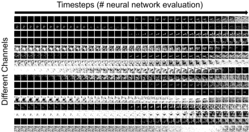
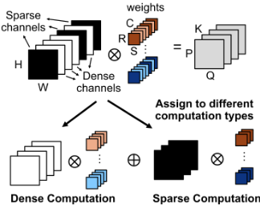
从图7可以明显看出，不同通道表现出各不相同的稀疏特性；一些通道高度稀疏（以黑色像素为主），而另一些通道则是稠密的（以白色像素为主）。此外，每个通道自身的稀疏性在不同时间步之间也会变化；稀疏通道可能变为稠密，反之亦然。这种时序逐通道稀疏性为加速提供了绝佳机会：稀疏通道可以被分组并交由稀疏引擎处理，而稠密通道则可由稠密引擎处理。在下一节中，我们将介绍一种新的硬件架构，以支持我们经过激进量化且具有时序稀疏性的扩散模型。
在本节中，我们提出一种新颖的计算方案与硬件架构，用于加速在基于 ReLU 的模型激活中观察到的时序逐通道稀疏模式。图 8 展示了核心概念：激活张量被划分为稀疏通道与稠密通道。通过根据激活稀疏类型对通道（包括权重与激活）进行分组，可以优化计算。请注意，在本工作中权重始终是稠密的。在所提出的方案下，稠密通道组由稠密处理单元处理，而稀疏通道组则由稀疏处理单元计算。此后，将各部分和相加即可得到最终结果。在后续章节中，我们将详细阐述该架构，它利用时序稀疏性来加速扩散模型，同时显著降低系统总能耗。
图 9 展示了我们的扩散模型加速器设计的整体架构，该设计改编自 MAGNet 模块化加速器生成器 [27]。该加速器由三个主要组件构成：控制器、稠密/稀疏处理单元（D/S PE）阵列，以及全局缓冲区与 PE 之间的互连网络。控制器管理时间步信息，并通过控制逻辑协调各个 PE。该架构包含两类 PE：用于稠密通道计算的稠密处理单元（DPE）和用于稀疏通道计算的稀疏处理单元（SPE）。这些 PE 通过可配置路由器（R）互连，从而能够高效地处理稠密数据与稀疏数据。
D/S PE 由若干关键组件构成：稀疏感知地址生成器、权重/输入/累加缓冲区、稠密/稀疏数据通路，以及带有稀疏检测器的后处理单元（PPU）。每个 PE 可根据计算类型配置为稠密数据通路或稀疏数据通路。根据稀疏模式，采用稠密或稀疏向量乘累加（MAC）数据通路来计算部分和。近期针对稠密加速器 [28]、[29] 和稀疏加速器 [30]-[37] 的研究工作已经证明了针对特定数据类型定制架构的有效性。在我们的设计中，稠密 MAC 数据通路采用了类 MAERI 架构 [29]，稀疏 MAC 数据通路采用了类 SIGMA 架构 [34]，因为这两种架构都非常适合处理不规则的矩阵尺寸。SIGMA 灵活的分发与归约网络还能够高效处理不规则的矩阵稀疏性。
在处理完所有输入通道后，来自累加缓冲区的数据将经过 PPU。稀疏感知地址生成器维护通道信息，包括稀疏类型（稠密、稀疏等）及相应的通道索引。利用这些信息，地址生成器产生必要的权重和激活地址，以便从全局缓冲区获取数据。PPU 中的时序稀疏检测器识别输出中的逐通道稀疏性。将零的个数与预定义阈值进行比较，以在稀疏感知地址生成器中更新下一层的稀疏通道索引信息。
为了适应稀疏感知地址生成器在从全局缓冲区取数时所需的非连续输入通道顺序，我们设计了一种通道在后（channel-last）数据映射策略，如图 10 所示。对于激活值，地址映射遵循宽度（W）、高度（H）的顺序，并将输入/输出通道（C）置于最后，使 PE 能够取回完整的稠密/稀疏输入/输出通道。对于稀疏通道，存储器中仅保存非零值及其二进制指示位（0 表示零，1 表示非零），这与 SIGMA 稀疏加速器架构相一致。对于权重，映射顺序依次为卷积核宽度（S）、卷积核高度（R）、输出通道（K），最后是输入通道（C）。这种 channel-last 排序确保所取回的相应权重与激活值对齐，从而优化计算过程。
时间稀疏性检测器计算输出的逐通道稀疏度，并将每个通道判定为稠密或稀疏。区分稠密通道与稀疏通道的稀疏度阈值经过确定，以平衡稠密 PE 与稀疏 PE 之间的执行时间。图 11（左）对稀疏度阈值进行了分析。基于该分析，我们选择 30% 作为稀疏度阈值。该阈值在稀疏张量部分实现了平均 70% 的稀疏度，同时保持了稠密 PE 与稀疏 PE 之间工作负载的平衡。
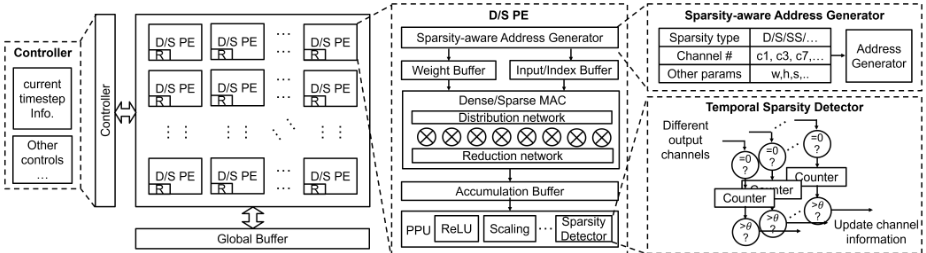
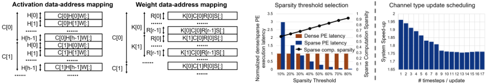
最后，我们提出一种时间稀疏性更新调度机制，以应对在各时间步中观察到的动态逐通道稀疏性。图 11（右）展示了稀疏度更新频率与系统加速比之间的关系。更频繁的稀疏度更新（即两次更新之间间隔的时间步更少）可提高稀疏/稠密张量分类的准确性，从而带来更高的系统加速比。由于稀疏度更新的开销与整体计算成本相比可以忽略不计，且可被隐藏在计算延迟之后，我们选择在扩散模型执行期间的每个时间步都更新逐通道稀疏度，以最大化分类准确性与系统加速比。
我们利用开源仿真框架 Stonne [38] 来评估 DPE 与 SPE 的延迟和能耗。Stonne 提供了对支持稀疏性的灵活加速器微架构的端到端评估。该设计在 28nm 工艺下进行仿真。在这些实验中，我们假设该架构包含一个 DPE 和一个 SPE，每个均包含 128 个乘法器。该架构可进行扩展以满足特定的延迟和功耗需求。用于比较的基线是包含两个 DPE 的纯稠密架构。图 12（上）展示了相对于基线在不同数据集上的平均加速比与能耗节省。在该图中仅关注时间稀疏性时，我们获得了 1.83× 的平均加速比，同时系统节能达 51.5%。
图 12（下）展示了相对于基于 FP16 SiLU 的扩散模型的总加速比。我们的 4-bit 量化带来了 3.78× 的加速比，而我们的时间逐通道稀疏性在量化的基础上又额外带来了 1.83× 的加速比。两者相结合，本文所提出的模型优化与硬件架构实现了 6.91× 的总加速比。
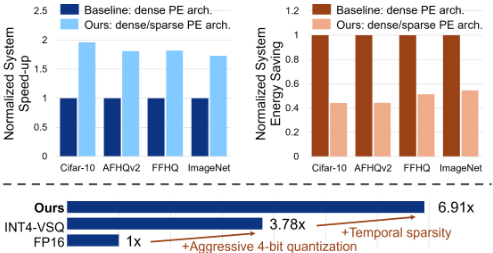
在本工作中，我们提出了一套协同设计的优化技术，将扩散模型激进地量化至 4-bit，同时促进显著的激活稀疏性。通过设计一种新颖的异构稠密/稀疏加速器架构，与 FP16 基线相比，我们实现了 6.91× 的加速比，同时展现出最先进的图像生成质量。通过利用时间稀疏计算，与传统稠密加速器相比，我们节省了 51.5% 的能耗。未来，我们计划将我们的技术扩展到面向视频生成的扩散模型 [39]，并将我们的方法应用于其他生成模型。探索新的深度神经网络（DNN）模型将使我们能够进一步增强我们的优化技术，并扩大我们所提出的加速器设计的适用范围。
1 条证据未在原文中核对到